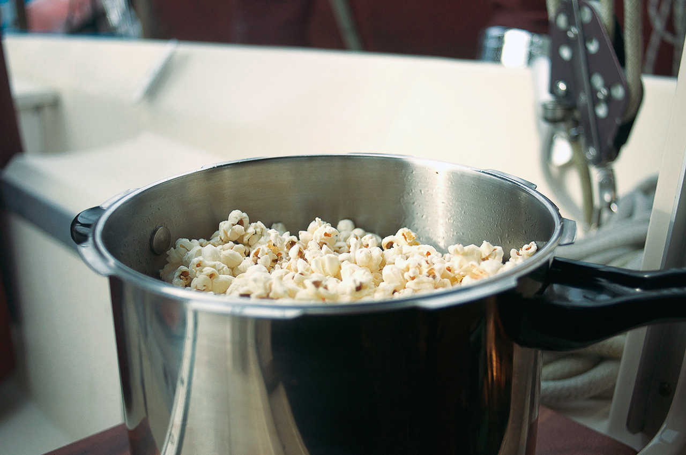

stovetop popcorn
20 cups — 5 minutes
Making popcorn on the stovetop is not a recipe perse, it's a reminder that it's easy to do and that it doesn't require any specialized tools or ingredients. It doesn't require a microwave, just a pot and source of heat (stove).
When Rekka was a kid their family used Jiffy Pop, unpopped kernels, oil, and flavoring agents that come in a heavy-gauge aluminum foil pan. Rekka enjoyed seeing the foil rise up into a dome as the kernels started to pop. Then later, their family adopted microwavable bags. These products—while easy and fun—cost more and create unecessary waste. Because we grew up with packaged popcorn, the idea of trying to pop our own kernels only occurred to us MUCH later in life.
So, again, this is a reminder that there are conveniences in life that we just don't need.
 dry corn kernels120 g
dry corn kernels120 g olive oil30 ml
olive oil30 ml
popcorn
- Put 30 ml (2 tbsp) of olive oil in a deep pot, bring to a high heat.
- Add a few corn kernels into the pot. Once they start to pop, add 120 g (1/2 cup) of dry corn kernels and cover pot with a lid.
- Shake pot for 10 seconds, let rest for 10 seconds. Do this until the popping sounds begin to lessen.
 nutritional yeast10 g
nutritional yeast10 g smoked paprika5 g
smoked paprika5 g
toppings
- Add desired toppings like nutritional yeast, smoked paprika or salt.